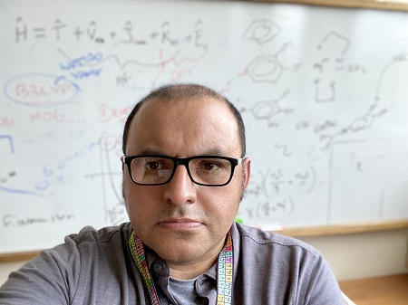

Lecturer in Physical Chemistry at the University of Reading.
Double click in this section to hear the content. Click to pause. Right click to cancel.
I earned my PhD at the University of Arizona where I wrote code to calculate non-Born-Oppenheimer, explicitly correlated
wavefunctions for many-particle systems in the presence of electric fields. After that I worked as a post-doc at the
National Institute of Standards and Technology developing novel DFT methods. In my 16 years at Rhodes College in Memphis, TN,
I studied protein-ligand interactions in the context of Cholesterol drugs, anti-bacterial drugs, and treatments for
Parkinson's Disease. Since moving to the UK I have been studying many-body effects in protein-ligand binding, the re-purposing
of drugs and natural products for new diseases, and Machine-learning/AI methods to generate novel drug molecules.
- Google Scholar profile.
- LinkedIn profile.
- Github page.
- University of Reading profile.
- Recent CV.
This is the work of Dr. Mauricio Cafiero and may be used widely though atribution is appreciated.